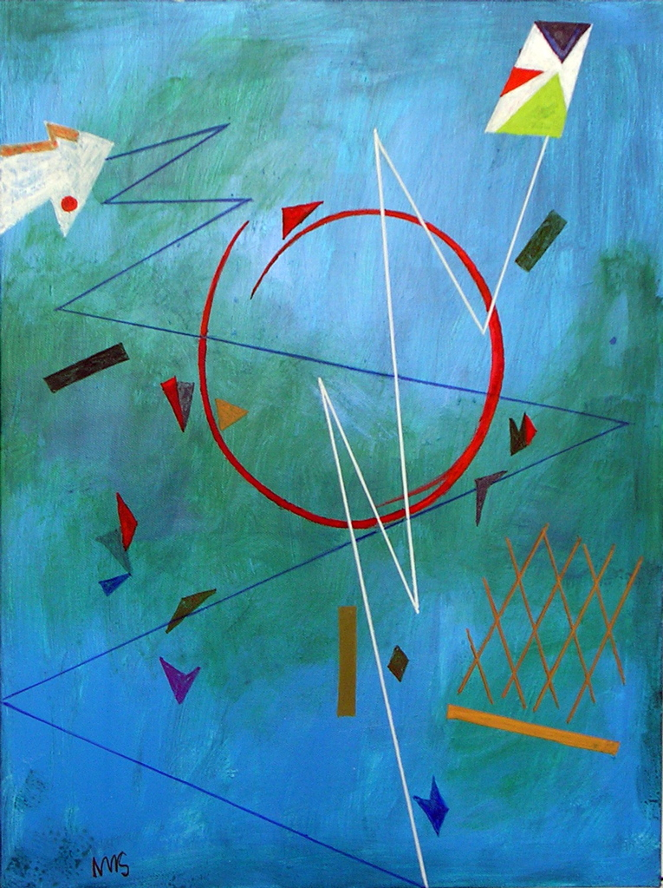
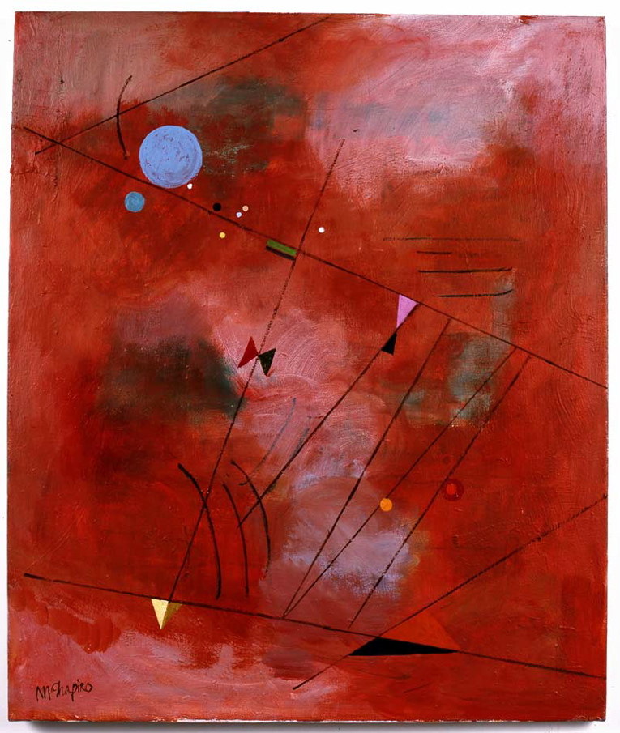

Toiles / Canvas
Series


Lost Kite I / 61cm × 46cm = 24'' × 18''
Passage To Infinity / 61cm × 51cm = 24'' × 20''
Light Theory / 61cm × 51cm = 24'' × 20''
Spherical / 61cm × 46cm = 24'' × 18''
Calligraphy I / 56cm × 82cm = 22'' × 32''
Twelve Tone / 76cm × 102cm = 30'' × 40''
Whirling Cosmos / 127cm × 102cm = 50'' × 40''
Kite in the Sky Writing / 127cm × 102cm = 50'' × 40''
The Scientist / 97cm × 81cm = 38'' × 32''

Background Red (also titled Sky Story) / 76 cm x 81.5 cm = 30'' x 32''